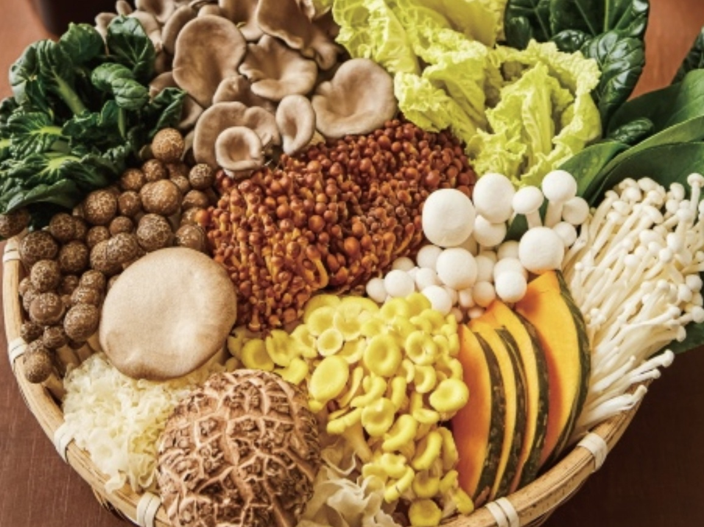
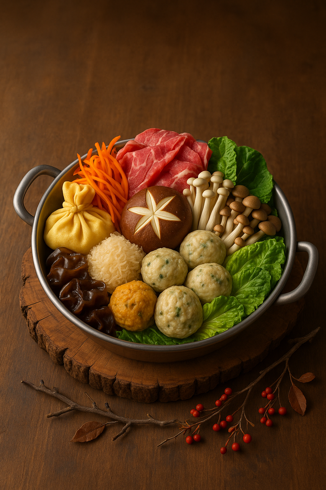
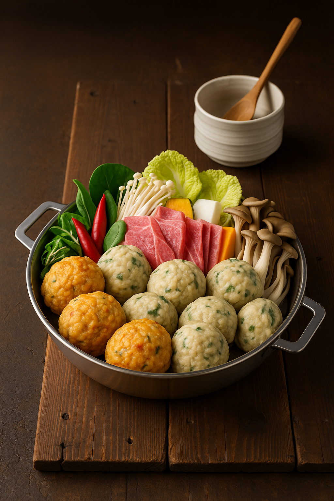
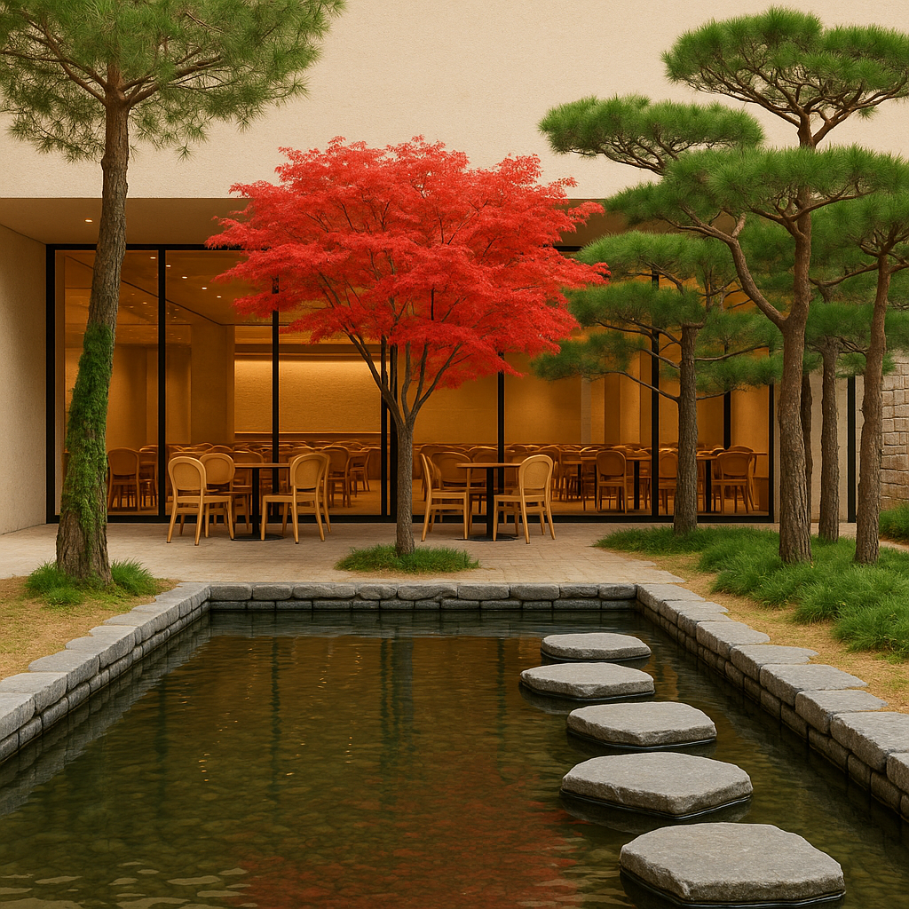
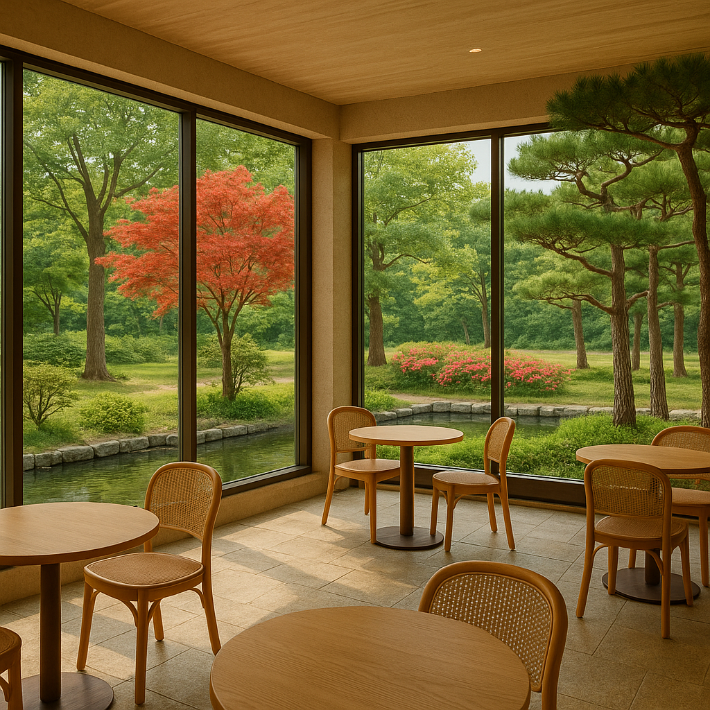
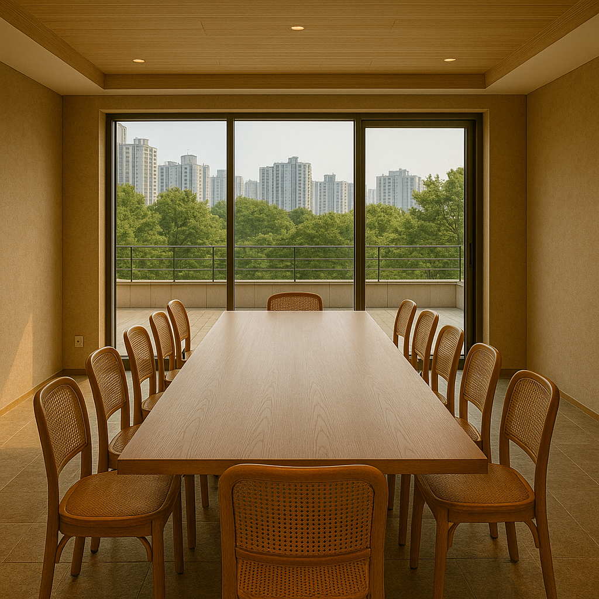

슬로건: "자연의 흐름을 맛으로 전하다 - 자연진미 해율만두전골"
자연의 순리를 따르고, 재료 본연의 맛을 살린 해율만의 만두전골
자연의 리듬 계절과 재료의 흐름에 따라 음식을 준비 24절기, 사계절 색채를 음식에 반영 (컬러 만두, 계절 만두 등)
저속노화 몸을 천천히 따뜻하게 해주는 음식 소화가 잘 되고 편안한 조리 방식 지향
혈액 건강 과하지 않은 간과 기름 버섯, 미역, 야채 등 건강한 재료 중심
해율은 자연의 시간과 법칙을 따르며, 그 흐름을 한 상 가득 담아 고객에게 전하는 브랜드입니다.
해율의 메뉴

해율 진미전골
자연을 더한 깊은 풍미, 버섯 가득한 건강 전골 자연연전골에 다양한 향긋한 버섯을 더해 산과 들의 생기를 담았습니다. 몸과 마음을 동시에 따뜻하게 하는 자연의 보양식입니다.

해율 자연전골
자연의 순리로 끓인 만두전골 신선한 제철 채소, 정성껏 빚은 굴림만두 담백하고 깔끔한 국물에서 재료 본연의 깊은 맛을 느껴보세요.

해율 프리미엄전골
프리미엄 한우와 자연의 조화, 정성 가득한 진미 깊고 진한 국물에 국내산 한우와 싱그러운 채소, 굴림만두가 어우러진 최고급 전골. 소중한 분들과의 특별한 식사에 어울리는 해율의 시그니처 메뉴입니다.
정성의 시간과 자연의 이치를 담아, 한 알의 만두에 철학을 빚습니다.
해율의 만두연구소는 단순한 조리 공간이 아닙니다.
자연의 순리를 따르고 재료 본연의 맛을 존중하는 해율의 철학이 시작되는 곳입니다.
유리 너머로 보이는 이곳에서는 매일 아침,
신선한 채소와 고기, 제철 재료로 굴려내는 굴림만두가 정성껏 만들어집니다.
밀가루 대신 최소한의 전분으로 감싸 자연의 결을 살린 해율의 만두는
속이 꽉 차면서도, 속이 편안한 깊은 맛을 자랑합니다.
계절의 변화에 따라 새로운 만두를 실험하고,
색과 식감, 영양의 균형을 연구하며
언제나 '더 나은 한 그릇'을 고민하는 이 작은 공간은
해율만두전골의 모든 메뉴가 시작되는 '맛의 실험실'입니다.
당신이 마주한 한 그릇의 만두전골,
그 뿌리는 바로 이곳, 해율 만두연구소에 있습니다.
자연과 공간이 만나는 곳, 해율만두전골
해율만두전골은 자연의 흐름을 담은 공간 안에서, 정성을 다한 한 끼를 경험할 수 있도록 세심하게 설계되었습니다.
고객의 입장에서 동선 하나까지 고민한 공간 구성, 음식의 철학을 담은 주방과 홀, 기다림마저 따뜻한 대기 공간까지
해율은 단순한 식당이 아니라 하나의 음식 여정입니다.

[1층] 환영의 공간, 해율의 시작
만두 찜 주방 & 판매대 직접 만든 굴림만두를 찌는 모습이 보이는 공간입니다. 따끈한 만두의 향기가 해율의 첫인사를 대신합니다.
만두연구소
유리창 너머로 보이는 연구소에서는 계절 재료와 건강한 조화를 연구합니다. 손님이 대기하거나 휴식하는 동안, 해율의 철학을 눈으로 경험할 수 있습니다.
로비 & 대기공간
로비에 들어서면 대기 등록 후, 메뉴를 선택하고 잠시 여유를 즐길 수 있는 공간이 마련되어 있습니다. 자연 소재의 인테리어와 차분한 음악이 마음까지 편안하게 합니다.

[2층] 푸르름과 맛이 머무는 메인홀
전면 유리창으로 펼쳐지는 나무 풍경 해율 2층은 앞·뒤·옆이 모두 탁 트인 자연 속 풍경으로 감싸여 있습니다. 천정고 4.5미터의 높은 공간감은 도심 속에서 누릴 수 있는 특별한 여유입니다.
오픈 주방 & 셀프 카운터
손님이 들어오면 먼저 보이는 오픈주방. 준비하는 모습을 직접 보고, 직원의 안내를 받아 자리에 앉습니다. 기본 반찬은 정갈하게 준비해 바로 제공됩니다.
총 37개 테이블, 룸 없이 열린 구조
가족, 친구, 혼밥 손님까지 누구나 편안하게 머물 수 있는 열린 홀 구조로 구성되어 있습니다.

[3층] 프라이빗 & 단체를 위한 예약층
예약제 운영 / 단체 모임 전용 조용한 모임이나 특별한 날을 위한 공간입니다. 공간은 25인 테이블 룸과 40인 테이블 룸으로 나뉘며, 필요시 하나의 큰 룸으로 연결 가능합니다.
모임의 품격을 높이는 프라이빗 공간
소규모 돌잔치, 가족 모임, 사내 회식 등 다양한 목적의 단체 손님을 위한 따뜻하고 고급스러운 공간입니다.
고객 후기
★★★★★
만두가 정말 쫄깃쫄깃하고 국물이 깊어요! 가족 모두가 맛있게 먹었어요. 다음에 또 오고 싶어요.
- 김지현
★★★★★
채소가 신선해서 건강한 느낌이에요. 아이들도 잘 먹어서 기뻤어요. 친절한 서비스도 최고!
- 이수민
★★★★★
매장이 깨끗하고 분위기가 좋아요. 만두전골이 정말 특별했어요. 친구들과 좋은 시간 보냈어요.
- 박준호
★★★★★
국물이 진하고 만두가 가득해요. 양도 많고 가격도 괜찮아요. 재방문 의사 100%입니다!
- 정예린
★★★★★
자연의 맛이 느껴져서 좋아요. 부모님도 만족하셨어요. 다음엔 단체로 오고 싶어요.
- 송민재
★★★★★
직원분들이 친절해서 기분이 좋았어요. 음식이 빨리 나와서 좋았고 아이들과 함께 오기 딱이에요.